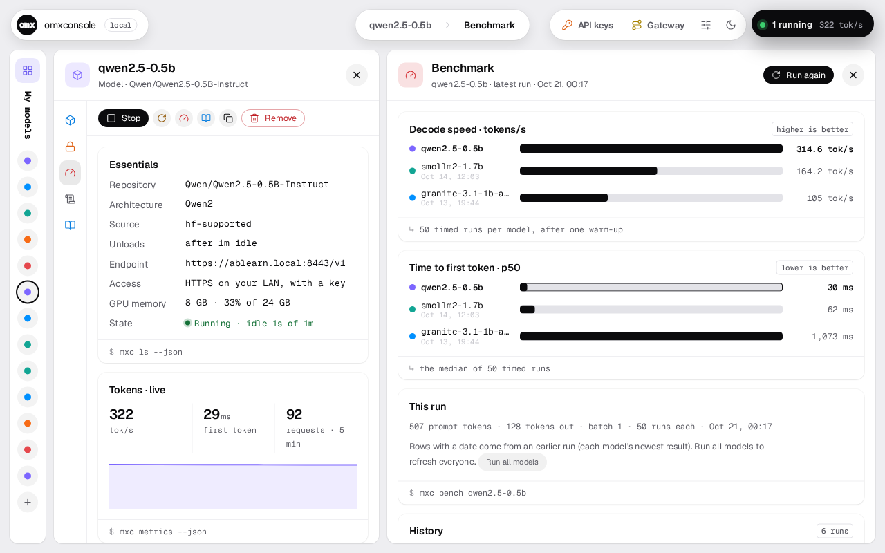
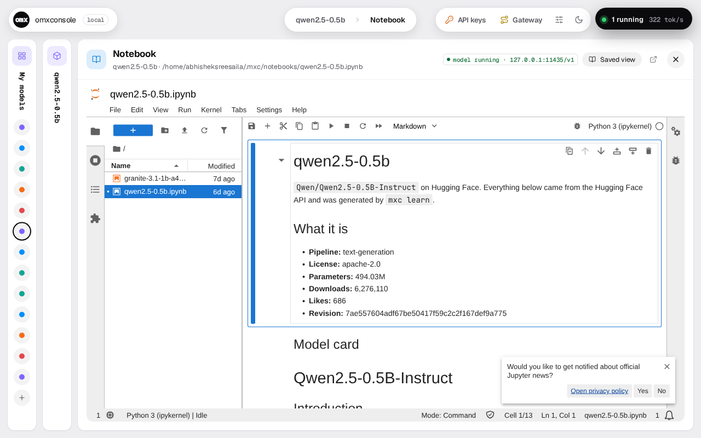
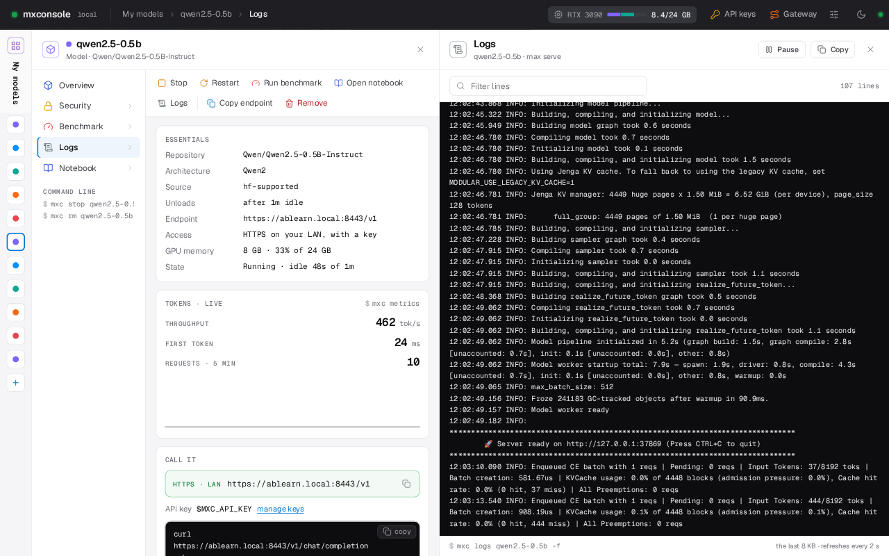
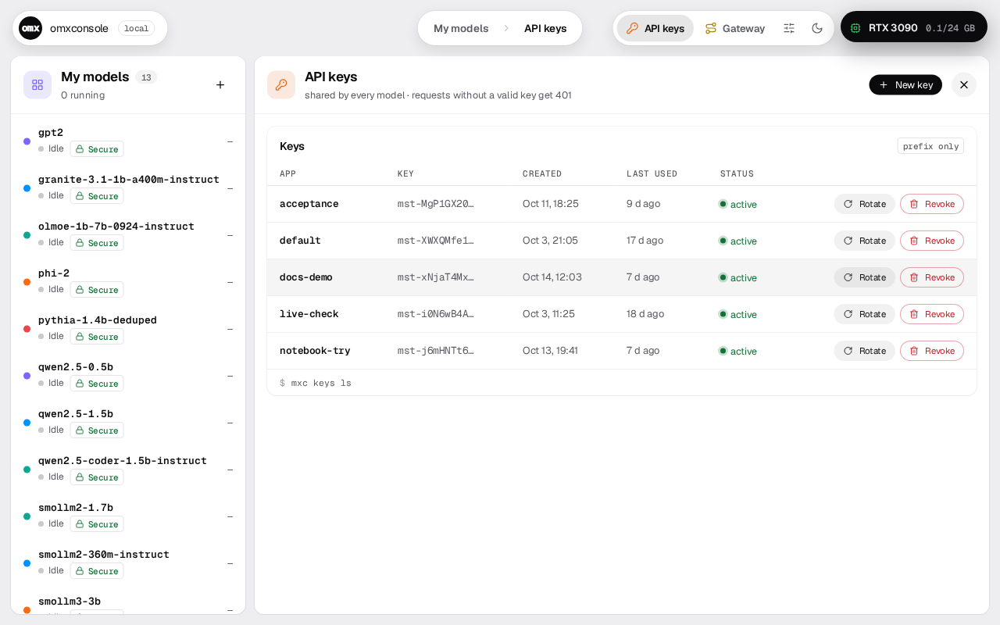

Local AI on Modular MAX, made easy.
One command gives you an OpenAI-compatible endpoint. Models load when called and unload when idle. If MAX can't run a model yet, omxconsole can port it.

One endpoint. Many models.
Models start on their first request and unload after five idle minutes. GPU memory goes only to what's in use.
The first call to a cold model waits for it to start; after that it's warm until it sits idle for keep_alive.
How a request travels.
Pick where the call comes from and whether the model is loaded, then press Play.
Porting, when MAX can't.
Claude Code writes a MAX version in a bubblewrap sandbox; omxconsole checks it against the Hugging Face original.

The console.
Every screen is a command too. The tour walks through each one.





Go on, ask.
Why MAX?
MAX already serves models fast. omxconsole is the convenience around it: one endpoint, idle unload, keys and a console.
Why not Ollama or vLLM?
Use them if you want their engines. Use omxconsole if you want MAX, served that easily, plus a way to port what it can't run.
Does it need the cloud?
Serving is entirely local. Only porting calls out, to your own Claude account, and only when you ask.
What does porting cost?
About $2–5 of Claude usage and 7–40 minutes per model in our tests. It never starts on its own.
Mac?
Linux with an NVIDIA GPU today. Whether MAX serves our models on Apple silicon is being checked; the Mac app waits on it.
What's next?
Small, verifiable steps, one at a time.
Available today.
$ git clone https://github.com/abhisheksreesaila/mxstudio.git && cd mxstudio $ pixi install $ pixi run mxc serve qwen2.5-0.5b
Any OpenAI client works. Point base_url at it and use your key.
Port numbers: one Linux machine, 2× RTX 3090, MAX 26.7.